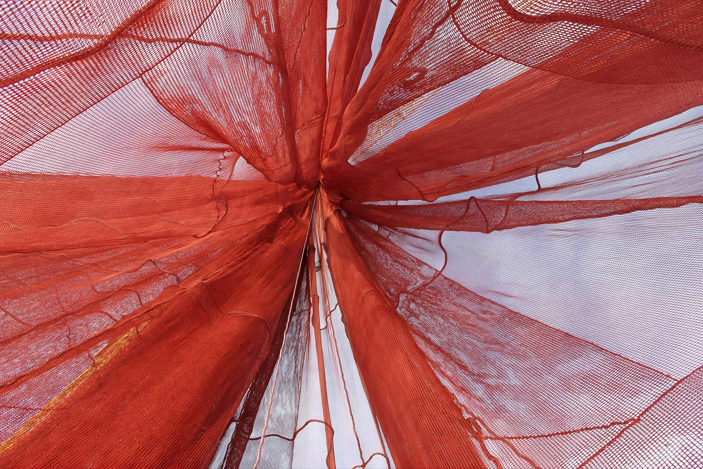

NetKem AS, uzun yıllar Mobil Oil ve ardından ExxonMobil bünyesinde bu ürünlerle çalışan Øistein Antonsen tarafından 2001 yılında kuruldu. Uzmanlık yerinde duruyor, yeni ürünler ise sürekli geliştiriliyor.
Şirket, su ürünleri yetiştiriciliği alanındaki öncü araştırma kuruluşlarıyla geniş bir iş birliği yürütüyor; hem kimyasal ürünler hem de ağ yıkama makineleri gibi teknik ekipman tedarik ediyor.
Bizi tanıyınTüm işletme döngüsü için çözüm geliştiriyoruz — ağ denize indirilmeden önceki emprenyeden, döngüler arasındaki yıkama ve dezenfeksiyona kadar.
Biyolojik kirlenmeye, UV'ye ve kurumaya karşı etkili koruma. Ağı yıpratmaz ve bilinen tüm ağ ipi türleri için onaylıdır.
Netpolish serisi, hem karada hem denizde temizlik süresini kısaltan pürüzsüz ve dayanıklı bir film oluşturur.
Ağın dayanımını ve kalitesini koruyan su bazlı temizleyiciler; alglere ve eski emprenyeye karşı yüksek etki.
9 m³ ile 70 m³ arasında değişen boyutlarda, ayarlanabilir programlara sahip patentli Gigant yıkama makineleri.
Biyosit içeren emprenyelerimiz, AB Biyosidal Ürünler Tüzüğü (BPR) kapsamında Norveç Çevre Ajansı tarafından değerlendirilmiş ve onaylanmıştır. Aktif madde; sağlık, çevre ve güvenlik açısından belgelenmiştir. Onay Haziran 2033'e kadar geçerlidir.
Emprenye, kaplama, ağ temizliği ve ağ yıkama makineleriyle ilgili sorularınızı hızla yanıtlıyoruz. Talebinizi gönderin ya da doğrudan bizi arayın.